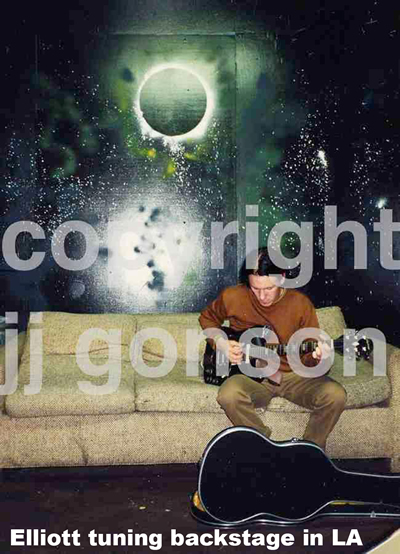

A book in progress by underground rock photographer JJ Gonson & punkrock roustabout, Sluggo. This book will center around their lives together & apart for the last 3 decades and the extraordinary people they've met. Stage front will be JJ's beautiful photographs of a life spent documenting. Many never before seen photos of Elliott Smith & Kurt Cobain will be featured, along with tons of behind the scenes shots.
"JJ and Sluggo were the kind of cool parental unit that
younger siblings could rely on...JJ with her abounding energy,
crayon colored hair was one of the most active photographers I knew.

She not only went to shows but found a way up on
stage and close to her subjects. Sluggo, a little more reserved
but no less abounding with ingenious design skills and the
guitar tsunami of dreads and leads."
-Dana Mei Lan Ong-Perez
(Guitarist / Slaughter Shack)
March 10, 2013
Please consider subscribing via email for book updates and other announcements.